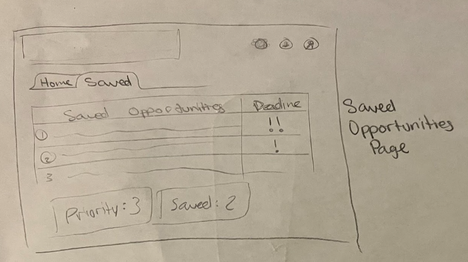
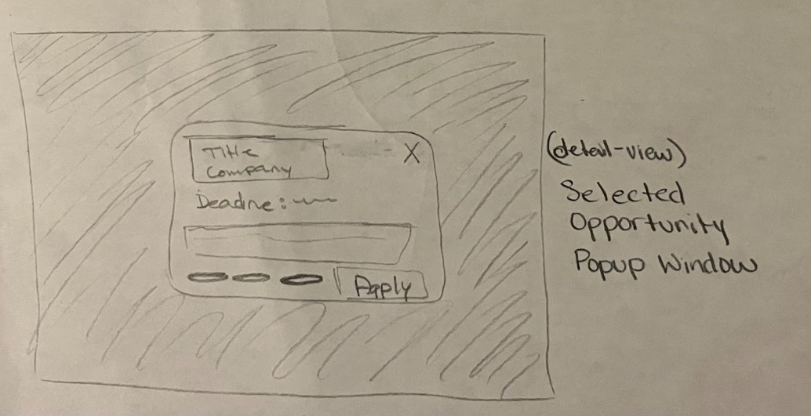
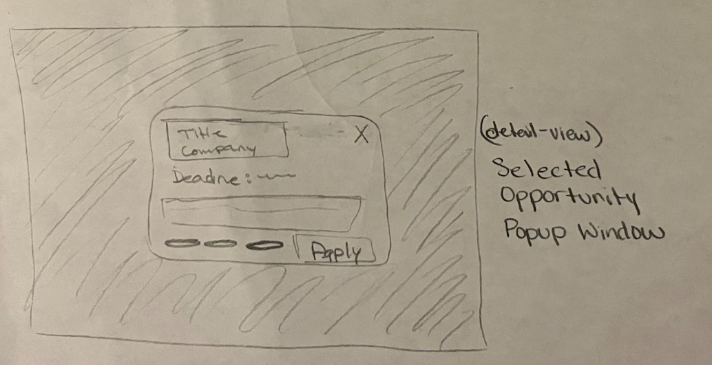
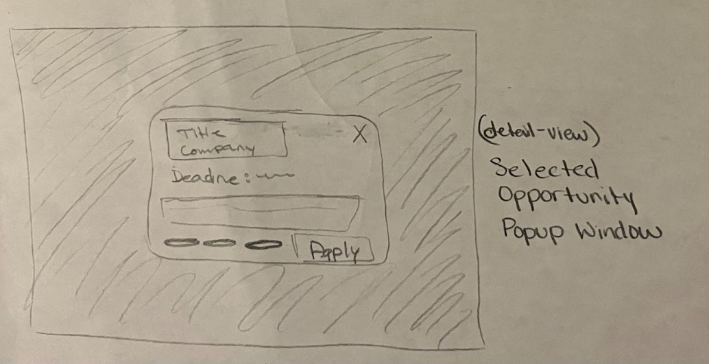

Design
Prototyping & Development
Initial Sketches
After gathering feedback, I translated insights into low-fidelity sketches to explore layout, navigation, and information hierarchy.

 


Design Priorities
- Minimize friction in filtering: Placed clickable tags immediately beneath the search bar
- View flexibility: Added toggle in top-right corner to switch between list and card view
- Deadline visibility: Made deadlines clearly visible for quick assessment
- Popup windows: Implemented for detailed views to reduce navigation overload
High Priority User Flows
- Filter and save an opportunity: Home Page → Switch to Card View → Filter by "Internship" → Select item to open popup → Click "Save"
- Mark saved opportunity as completed: Home Page → Navigate to "Saved Opportunities" → Mark item as "Done"
- Post a new opportunity: Home Page → Click "Post Opportunity" → Fill out form → Submit
Digital Prototype
I recreated all initial sketches in Figma, refining the design and expanding different states. During this stage, I also added a new page specifically for users who want to post opportunities directly through the app.